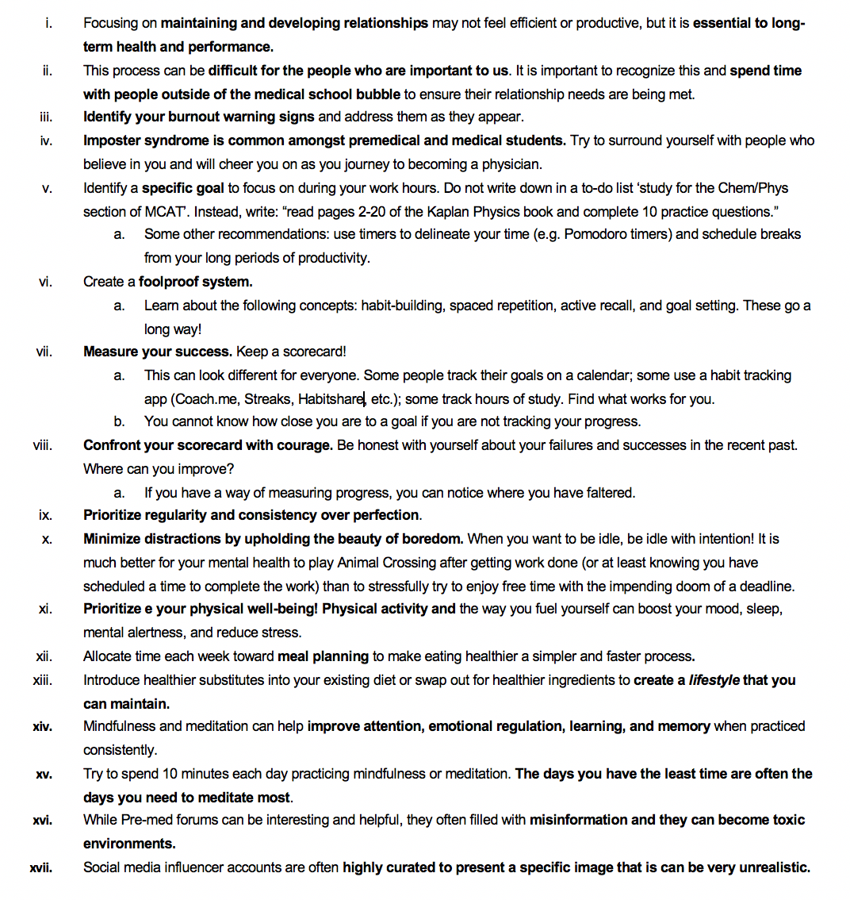

Meet the Authors!

Chapter Outline:
I - Relationships and Support System
The journey to medical school(and beyond) is a long and often lonely process. While everyone's experience varies, one of the most important ways that students ensure their well-being throughout the admissions process, and during medical school, is by focusing on developing a robust support system. Depending on where you are in your life, this support may come from a significant other, parents, siblings, roommates, friends, mentors (within or outside of medicine), or other applicants. The importance of developing this support system and working to maintain it throughout the application process, and later medical school, cannot be understated. This journey will not end when you finish the MCAT, get an interview, or even receive your admissions offer. It is a continuous process where you will inevitably need to rely on the support of others to succeed.
It is easy to lose sight of the value of spending time with other people when you have thousands of MCAT practice questions to do, you still have no idea what organic chemistry is, and you keep falling asleep while reading Doing Right. While spending time with others may not feel productive, efficient, or useful at times, it is essential for ensuring your long-term health and performance on top of being a more enjoyable way to live your life. These relationships and time away from the sometimes all-consuming process of applying to medical school will help sustain you and allow you to maintain higher productivity levels while studying and preparing for other parts of the application process.
Whether you end up 'drifting apart,' 'don't have time for a relationship,' 'they don't understand what you are going through,' or any number of other reasons maintaining relationships while applying to, and attending, medical school, is difficult. Some relationships will be strengthened by the process, and others will, unfortunately, meet their end. We are not here to tell you how to manage your relationships, but it is essential to recognize that both friendships and romantic relationships can play a significant role in the success of many applicants.
Going through this process is difficult, nobody will question that, but we must acknowledge that these times can be equally challenging for the people we are close to. Recognizing this and working to ensure lines of communication remain open, even if the time you can commit to the relationship has decreased, is critical. Finding less time-consuming ways to show your significant other you still value the relationship can be particularly helpful. This will vary widely but could mean anything from scheduling a semi-regular date night or even taking a few minutes every night to unwind and watch Netflix with them. The specifics are less important than the gesture and being truly present with them when you are together.
As you move forward with your application, and eventually, medical school, remember that we live in a bubble and often family, friends, and significant others do not live in that same bubble. Next time you are with someone from outside of your bubble instead of talking about your MCAT score, your new record typing speed you think will help with CASPer, or how amazing your latest research project is, try focusing on that person and asking about their life. There is a time and place for those conversations, and you should not feel like you can't talk about it, but we must all take a step back from time to time. Be present in your life and relationships. It will not only benefit your own well-being but also improve your relationships and allow you to work more effectively over time.
II - Burnout
Burnout is a state of physical, emotional and mental exhaustion caused by prolonged stress. Life is a marathon, and if you are living each day like a sprint, overcommitting and taking on far beyond your capacity, you are bound to reach a breaking point. Burnout is particularly common among pre-medical students due to the high expectations from medical schools, such as competitive MCAT scores, high GPAs, and strong extracurricular records. These requirements undoubtedly contribute to the stress many pre-medical students experience. Students begin to feel the need to overwork themselves in order to accomplish their goal of becoming a physician. However, many students push themselves to a point of prolonged stress and exhaustion, ultimately resulting in burnout. Having been through the application process and successfully gotten into medical schools, we can confidently say that overworking yourself past your breaking point is not worth it. Taking care of yourself and your health should take priority. Remember, you are human first, before a student or anything else, prioritize accordingly.
To help prevent burnout, here are some practical tips and approaches you can adopt:
Now what happens if you tried your best but still end up feeling burned out? At this point you must take a break from activities that might be contributing to your stress. Take some free time, do the things you love, be with the people you love and if you can, seek help. You can seek help by confiding in a friend, mentor, or anyone willing to provide support. You can also utilize various resources such as online sources, mental health phone lines, or your school’s counselling services, if available. Being burned out does not mean you are a failure, or you did something wrong. Instead, it represents a chance for you to regain energy, unlearn unhealthy habits and behaviours , and adopt new, healthy habits that will contribute to you being an amazing physician in future.
III - Imposter Syndrome
Have you ever doubted your abilities, felt undeserving of your accomplishments, or felt like a fraud? That is imposter syndrome. Simply put, imposter syndrome is a psychological pattern which makes you doubt yourself and your accomplishments. Imposter syndrome is common among pre-medical students, medical students, and physicians. In the journey to becoming a physician, you might begin to doubt your ability and even question whether you have what it takes. With success comes joy, and all imposter syndrome does is steal that joy. We hope that even while reading this, you reflect on your own lived experiences and appreciate the wonderful things you have done. Regardless of what your achievements are, do not doubt that you are an amazing person, and you deserve the accomplishments that come with that.
To overcome imposter syndrome, you can start by positively affirming to yourself that you belong. We are often our own biggest critics, so be intentional about the words you use to speak to yourself. This takes practice and do not expect to see results overnight. But the more intentional you are about reminding yourself that you are deserving, the more likely you are to believe those words to be true. Secondly, look for evidence that convinces you that you are not a fraud. Sit down, reflect, and think of all your past accomplishments. Your past accomplishments remind you of all the work you have put in over the years and that your success was not an overnight feat. In addition to focusing on past accomplishments, focus solely on yourself. Commonly we compare ourselves to others and their accomplishments. However, comparison only plants seeds of doubt and exacerbates imposter syndrome, only serving to increase the apparent masking of your own accomplishments. Focusing on yourself, your accomplishments and working to be the best version of yourself is all that matters. From experience, we can tell you that medical schools are not necessarily always looking for the students with the highest of GPAs, MCAT scores, and other quantitative metrics (See Chapter 6: Applying). But medical schools are looking for students with the potential to be great physicians, so focus on being the best version of yourself. Lastly, surround yourself with people who believe in you and will cheer you on as you journey to becoming a physician. When you feel doubt creeping in, speak to people who can remind you that you belong. The journey to medicine can seem long, daunting, and challenging sometimes, but seeking support from others can go a long way.
If no one tells you this, we are here to echo that you are very deserving of every single one of your accomplishments. Good luck with your journey!
IV - Time Management & Habit Building
For many of us, applying to medical school felt like a part-time job. We often underestimate the amount of time it takes to research schools and admissions requirements; write essays and organize resumes; practice for interviews; and complete the MCAT and CASPer. This is on top of what feels like an innumerable leadership positions, volunteer groups, and extracurricular activities. Have we even factored in studying and employment? Personal relationships? It can get overwhelming very quickly.
In academia (especially in medicine), there is constant talk about wellness and mental health. However, there seems to be a paucity of what that looks like for applicants and students alike. The purpose of this section is to put together the key aspects of wellness (relationships, nutrition, exercise, etc.) into a cohesive unit. You can drink smoothies until your face turns green or exercise for hours - but if you do not have a fool-proof schedule and time-management skills, the application process will be soul crushing. As mentioned previously, everything ultimately comes down to your ability to balance your career aspirations, extracurricular activities, personal relationships, and study time in a sustainable way.
This section draws substantially from the following (highly recommended) texts and resources:
Part 1: What matters to you most? Schedule it.
In a world crammed full of distractions and competing goals, a schedule is tantamount to your success. For many students this process can feel ‘stifling’. Nobody wants to schedule ‘video games’ in a planner. Nonetheless, we will argue that this is precisely the kind of activity that will make the application process more manageable and fulfilling. If you give yourself a playbook for your week - you are better equipped to handle what comes your way. In reality, this produces more freedom, insofar as you give yourself the time to complete the kind of activities that constitutes wellness in its fullest sense; the stuff that gives you the most joy.
Before you create a schedule, it is imperative for you to decide on what matters most. Are you an athlete or fitness enthusiast that needs a detailed exercise routine to stay sane? Are you working a demanding job that requires a lot of your time? Perhaps your close relationships with family and friends is most important to you.
Part 2: Find a scheduling system that works for you.
Once you’ve figured out what your priorities are and what other hobbies you want to include in your schedule, try out different scheduling systems to see what works for you! Here are some suggestions:Part 3: Stop lying to yourself. You know you’ve been on Twitter for five hours today.
The fact of the matter is that most of us waste our time on useless activities every day. There is no way to sugar-coat it. The purpose of this section is not to shame you or tell you to ‘delete all your social media’ as a form of wellness. This is simply not realistic - and we strongly encourage you to stop setting unrealistic expectations for yourself. Here are some ideas instead:Part 4: Build a strong system that emphasizes consistency over perfection.
In his book Atomic Habits, James Clear states that “goals are good for setting a direction, but systems are for making progress.” So many of us set lofty goals - about our GPAs, MCAT scores, interview preparation, specialty choices, etc. However, if you do not put in place the kind of foolproof system that centres on daily habits working towards this goal - it becomes much tougher. Do you have that kind of system?
When you are building the daily habits that constitute your strong system, prioritize consistency over perfection. Let's say you want to get a high MCAT score. Is it better to have 10 perfect study days out of 30 in a month? Or to consistently study everyday for 30 days - even if you have some bad days thrown in? The latter is what allows you to build habits - the kind of mindless repetition of an activity you need to accomplish your long-term goal.
In more ways than one, habit-building requires introspection and a lot of work! There are some video resources at the bottom of this chapter to help specifically with the kind of detail (cues, rewards, habit stacking, etc.) for those interested specifically in habit-building.
Key Takeaways
Here are some important things to consider when thinking about managing your time:
To summarize, James Clear puts it best: “We don’t rise to the level of our goals, we fall to the level of our systems.”
V - Healthy Lifestyle
Chasing the goal of going to medical school can be a time-consuming process and taking care of our physical health can fall on the back burner. When the topic of wellness is thrown around, the first thing that comes to mind is mental well-being but taking care of our physical health with nutrition and physical activity is just as important.
Our brain needs fuel, and how we fuel our brain makes a difference in both its function and our mood! This connection can be explained through the gut-brain axis. Research has shown that the foods that we eat affect our gut environment, and our gut health can negatively or positively affect our mood through the serotonin receptors located in the gut. Eating healthier foods for a healthier gut can improve our mood4. This portion of the chapter is not meant to explain what foods to eat, but how to implement healthy changes to your lifestyle.
Eating healthy can be stressful. Imagine coming home after a long day of school, studying, or work and having to spend more time cooking a nutritious meal when feeling drained. This can lead to choosing convenience foods, which are not always the most nutritious. This is where meal prepping becomes a game changer.
Benefits of meal prepping:1. Healthy foods become accessible;2. Saves time throughout the week; 3. Reduces stress of decision making; and 4. Saves money.
Organization prior to prepping the meals is very important, and this can be done through a spreadsheet. Here are some tips when creating your spreadsheet: • Save your list of recipes! Record the time spent on a recipe, complexity of the meal, any modifications made, and your overall impression. • Plan everything out – breakfast, lunch, dinner, AND snacks • Create a grocery list to reduce time at the grocery store and prevent buying things you do not need. • You can use excel or google sheets to allow you to track meals over time and give access to other people (if sharing!)
Below is a sample spreadsheet for meal prepping, both for tracking meals and for the week! There is not a single way of going about this, but any organization can make your meal prepping process easier.

When scrolling through our social media feeds, they are often consumed by fad diets and products that are targeted for weight loss to make us “healthier”. But eating well does not necessarily mean going on fad diets or only eating only these “good” foods. It is about creating changes to your diet that you can maintain in the long term. This can be as easy as making the same foods that you enjoy but substituting certain ingredients to make it more nutritious or healthy. It is important to remember that these foods do not have to be banned from our diet, but rather we are choosing the healthier option more often. By not limiting ourselves, we can foster a healthy relationship with food while also improving our well-being.

For more information on how and the types of foods we should be eating, Canada’s Food Guide has plenty of recommendations!
Minimalist Baker - This website includes endless recipes for alternative diets including dairy-free, gluten-free, vegan, and vegetarian. All recipes are 10 ingredients or less, 1 bowl, or takes less than 30 minutes to prepare!
Allrecipes or SuperCook - Both apps are free and come up with recipes for you once you enter whatever you have left in your pantry! This is perfect for last minute healthy meals.
Budget Byte$ - Eating healthy can become costly without knowing what foods to buy. This app creates easy healthy meals that are also budget-friendly!
Studies have shown a link between aerobic exercise and our mental well-being! Outlines below are just a few of the many benefits of including physical activity in our daily lives:
Life is busy. We can always say that we have no time, energy, or motivation left at the end of the day to get physical activity. But, identifying the barriers we may face in our journey to getting physical activity and creating strategies to overcome them will help incorporate exercise into our daily life!
Time - Start by tracking how you spend your time throughout one week to help identify where you can fit in exercise 3-5 times a week. If you still feel that your time is limited, start incorporating exercise into activities you were already doing. Walk or bike to school instead of taking transportation or driving. Exercise while watching TV. Every little bit counts! For more help with time management, head to the Time Management section of this chapter. Energy - If you are too tired at the end of the day, plan your exercises at the start of your day. Exercise can build energy levels! Motivation or Confidence - It can be overwhelming exercising around others, but these feelings are normal. Start with a set exercise plan to give you a sense of direction or find a workout partner to increase your sense of comfort, enjoyment, and to encourage each other. You can keep each other accountable and motivate one another to keep striving towards your goals. Remember not to compare yourself to others, everyone is on their own fitness journey!When choosing to incorporate physical activity into your life, you should leave the mindset that you have to be “athletic” to exercise behind. Being physically active does not always mean going to the gym and lifting weights, but instead looks different to everyone.
The most effective way to implement physical activity is to do something that you enjoy. Forcing yourself to exercise in a manner you do not like is counterproductive. If you hate going to the gym, do not go! There are many ways to be active that fit into your life. Do not be afraid to try something new!Some fun ways to get exercise without going to the gym:
VI - Mindfulness and Meditation
Meditation and mindfulness have been shown to be very effective ways to maintain wellbeing, manage one’s emotions, handle stress, and serve as powerful cognitive behavioural coping strategies for transforming the way one responds to life events. Thus, it can be very helpful to take part in mindfulness and meditation when applying to and during medical school, which can be a strenuous process. Students are required to juggle their personal lives with obtaining a high undergraduate GPA, writing the MCAT, formulating a strong application, and taking part in extracurricular activities. Using mindfulness and meditation to cope with these stressors can help you achieve your goals and enhance your performance by improving attention and sensory processing through cortical thickening, emotional regulation and response by increasing hippocampal and frontal volumes of gray matter, and learning and memory by increasing regional brain gray matter density.
Meditation is a set of attentional practices which lead to an altered start or trait of consciousness. This is done by expanding awareness, having a greater presence, and a more integrated sense of self. This way, one is able to achieve inner calmness and awareness.
Meditation has been shown to allow individuals to successfully face challenging circumstances in their lives. Generally, there are two types of meditation, concentrative and mindfulness meditation. Concentrative meditation focuses on attention onto an object and sustaining that attention until the mind is still. Mindfulness meditation focuses on an open awareness to any contents in one’s mind that arise. Some examples of both types of meditation that can be completed in 5 to 10 minutes are:
Tip: Try to include these meditation practices in the morning, right after you wake up or before bedtime daily. You can also meditate during your study sessions for school, for the MCAT, or even when you are feeling stressed writing your medical school application essays. Try to set aside at least 10 minutes during your breaks to meditate.
The benefits of meditation have been widely proven. A study conducted in 2016 recruited 1st, 2nd, and 3rd year medical students in New York and subjected them six weeks of yoga and meditation. They found that the medical students had lower levels of stress, higher feelings of peace, focus, endurance, happiness, and personal satisfaction after the meditation. Another study recruited students from a college residence and divided them into two groups, one which performed yoga for 45 minutes daily and one which did not. They found that the college students who performed yoga had significantly higher scores of cognitive appraisal, positive affect, self-compassion, and more mindful attention. This group also had a lower level of negative affect and expressive suppression. Therefore, meditating may be a useful way to cope with the challenges of applying to medical school and perform better in school and/or any assessments you may be preparing for.
Alongside meditation, mindfulness is extremely effective in maintaining wellness during one’s journey applying to medical school. Mindfulness is a form of meditation that deserves its own spotlight. Mindfulness is a conscious sense of awareness, characterized by systematically paying attention on purpose. This attention should aim to embody compassion, impartiality, and acceptance of self and one’s surroundings. This way you are aware of your feelings and senses without interpretation and judgment. It is well-known that mindfulness as a formal discipline helps to foster greater awareness and insight amongst students and practitioners. One study investigated the effects of mindfulness-based stress reduction on medical and premedical students. Students were subjected to an 8-week mindfulness meditation intervention and it was found that level of anxiety and distress including depression had decreased, and empathy had increased12. Therefore, mindfulness practices are beneficial with regards to dealing with anxiety and developing the needed skills to be an empathetic physician.
Some examples of mindfulness exercises are:
Tip: Try to perform these exercises daily, whenever you are able to. Try to incorporate mindfulness into everything you do. Mindfulness is a lifestyle, not a chore or a task. When you find yourself feeling disconnected, stressed, “zoned-out”, or emotionally unstable try to recognize and appreciate how you are feeling. Then try to reconnect with yourself, awareness and environment by performing the aforementioned exercises.
VII - Social Media and Positive Self Worth
Pre-med Forums
Many of us have been there, visiting the Premed101 forums, looking at past years’ posts by applicants who were admitted into medical school and comparing our statistics to theirs. Although it may give some informal information regarding the Canadian medical school application process , they also have the potential to cause more distress than reassurance. The reality is, we know they are there and we are very likely going to check them – they do serve as an extra resource after all and isn’t that what the medical school process has made us believe? That to be admitted to medical school, we must exhaust every resource available to shape us to be the best applicant possible? Here are 3 reasons why you might want to rethink how much you allow the forums to define your self-worth and preparedness for the application process:
Social Media Influencers
Social media has become a medium through which many aspiring healthcare professionals, healthcare students and even practicing professionals share their signifiers of social, mental, and physical wellness. In medicine, the concept of professionalism and self-regulation as a practice of professionalism is commonly discussed both prior to medical school, during medical school, and throughout the career of a physician. There is an expectation that whether a student or practicing physician, one’s social media presence and statements made online should be made with the awareness that whatever is posted on internet-based media and interfaces are made public. As such, a social media presence reflects on the larger organizations that the individuals are a part of in addition to on themselves and medicine as a whole. Even when accounts are technically made private, posts should be made with the understanding that there is no such thing as a private social media network. These ideals have been supported by governing bodies such as the College of Physicians and Surgeons of Ontario and the Canadian Federation of Medical Students.
That being said, it is of opinion that healthcare influencer accounts are even more so curated than regular influencer accounts to uphold expectations of professionalism. What does that mean for its viewers and followers? It is very rare to see a balanced picture of the good, bad, and ugly of the pre-medical school, medical school, and the physician journey that may be advertised online. It might all look good – feeds curated with celebrations of successes, accomplishments, perfection. However, it is important to understand that if looking at those accounts instills feelings of inferiority to you and the inability for you to imagine yourself as a medical student or practicing physician one day, then these accounts are no longer serving you with valuable information about the medical world and are instead harming you and a break from social media might be worthwhile at that point.
Key Takeaways
To summarize, James Clear puts it best: “We don’t rise to the level of our goals, we fall to the level of our systems.”
Letters to my Younger Self
Dear Lucas,
As you progress through your education, savour every minute of it. While you may not see it now, your time in college and undergrad will be an amazing once-in-a-lifetime experience. Study hard, but also play hard. Spend time with your friends, family, partner, and son. You will never again have as much time as you do now. So, enjoy it!
‘Play hard’ doesn't necessarily mean ‘party hard’, but it does mean you need to enjoy yourself. Whether it's work, volunteering, classes, research, or other extracurriculars, do things because you enjoy them, not just because you think you need to. If you are passionate about what you do and show up ready to work every day, you will succeed.
Lastly, don't sell yourself short. You are capable of big things when you set your mind to it, but don't let your ego get in the way of the work you do. You will succeed not because you're special, but because you are dedicated and hard-working. Remember, no matter what position, title, or letters you have behind your name, you are still the same person. Remain humble and fierce. Now, go out and change the world!
Sincerely,
Lucas King
**Dear Kika,
I know you think that once you get into medical school - life will become easier. This could not be further from the truth. In my few years on earth, it has quickly become apparent to me that the opposite is the case. Each stage of your life brings its own complexities. Medical school will add even more confusion to your life. You will stay up in bed wondering if this is the right path for you. You will question every decision you make. You will compare yourself to anyone with even a shred of skill that surpasses yours. This is not a bad thing; you are simply growing.
It may feel overwhelming now, as you struggle to balance competing priorities. I know it is hard. But if anything, live through the difficulties of the process and wrestle with them as they come. Work hard now to learn good habits. It will make medical school, residency and practice so much easier. Learn how to cook from Mom, and learn how to parallel park from Dad.
Take time away from studying to catch up with your friends! There will never be enough time to study for that test you’re worrying about. But the moments you spend with those you love are irreplaceable. And finally, stop comparing yourself to others! If you’re always looking over at someone else’s garden, when will you water yours? Please remember that you have something to bring to the table, and the people with big titles and long resumes and what feels like an insane number of accomplishments are human too.
Never forget the evergreen quote: “Comparison is the thief of joy.” Live joyfully.
Sincerely,
Kika Otiono
**Dear Farhan,
I know what you’re thinking—you’re thinking, “What if I am not good enough to get in?”. You’re focusing on the negatives and are constantly worrying about what the future holds for you. Well, let me tell you a few things, believe in yourself, be confident in your abilities, and believe that you are enough. Positive thoughts bring positive outcomes. You are the son of loving and caring parents who have instilled within you values of love, empathy, compassion, and perseverance. They support you in every capacity they can, and although they may not be able to support you financially and have a difficult time understanding your academic journey, they are there for you and are so proud of you. Use their love as a vehicle to motivate you to strive for greatness.
Do not doubt yourself just because you are the first generation in your family to attend high school and a post-secondary school, and potentially medical school. Instead, use this experience as a gift and inspiration to keep following your dreams. Your hard work, dedication, and passion for medicine have brought you to where you are right now so do not give up.
I am so proud of you for taking care of yourself through your journey of studying for the MCAT, maintaining a high GPA, and being active in research and the community. Keep working out, writing poetry, meditating, and spending time with your loved ones. However, I know at times you feel worn out and weak because you are working two jobs during the summer along with working as a research student and studying for the MCAT. You are finding it difficult to balance everything and come close to breaking. This is normal. But you need to be proud of yourself for how hard you work. Hard work definitely pays off and when you receive the offer of admission to a medical school you will look back at these moments and smile. These are the moments that made you the diligent and strong man you are today.
Make sure to be a good role model for your younger brother and keep playing video games with him--he loves it and will. You do not know how much these little things mean to him.
All the best,
Farhan Mahmood
**Dear Noor,
In a few short (but what will seem like long) years, you are going to be sitting in your first lecture of medical school at your dream school. It is going to feel surreal for the foreseeable future, because you’re going to wonder how you ever ended up here. You’re going to laugh at how trivial failing a couple of exams in your first year of your undergraduate career suddenly seems, and you’re going to be thankful you didn’t give up your passions when the people in your life told you to stop focusing on your extracurriculars and stay focused on your grades because the moments you will remember most from your undergraduate experience were the lessons learned outside of classroom settings.
You’re going to have a hard time navigating the pre-medical school mentality because you’ll know deep down that it is toxic to determine your self-worth by comparison to your peers, but you’re going to do it anyways, and you’re going to think that once you get to medical school, your self-esteem and strong sense of identity are going to come together. But they won’t. And you will spend your first year of medical school wishing that you prioritized your mental health more in the years prior and in understanding that medical school is not the destination, but just another journey that will come with a whole new set of challenges and many rewards too. It’s going to be worth it and I hope you take some time to be proud of yourself for the big and the little wins alike, and when you feel like you’re starting to lose yourself in the process, don’t feel afraid to fall back on the people who care about you, because they will be there if you let them be.
Sincerely,
Noor
Meet the Authors!

**Extra Resources**
We came together to write this book in our attempt to break down some of the barriers to medical school. When we know better we do better- together!